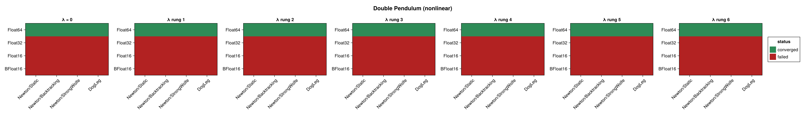
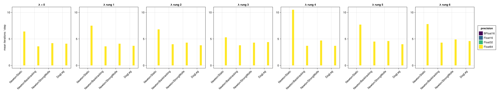
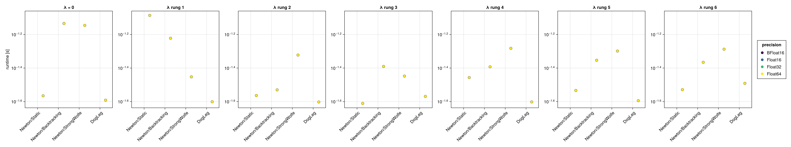
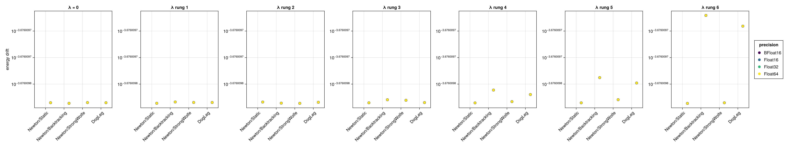
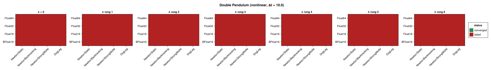

Double Pendulum (Nonlinear Integrator)
The double pendulum benchmarked with the ShallowNet integrator (see Harmonic Oscillator (Nonlinear Integrator) for the network setup and the regularization sweep). It is built as a two-dimensional lodeproblem; being chaotic and strongly nonlinear, it is a demanding test for the implicit network solve. Its Hamiltonian depends on both q and p, so the energy drift is evaluated from the full state. No closed-form solution exists.
The figures panel by the regularization factor $\lambda$ — a rung of the $\sqrt{\varepsilon(T)}$ ladder, so one panel is a different shift at each precision; solver configurations are on the x-axis and precisions are distinguished by colour. Results are shown at $\Delta t = 0.1$ and repeated for $\Delta t = 1.0$ and $\Delta t = 10.0$ (ten steps each).
using SolverBenchmark
spec = double_pendulum_lode_spec(timespan = (0.0, 1.0), timestep = 0.1)
df = cached_sweep("nonlinear_double_pendulum_dt0.1") do
run_nonlinear_benchmark(spec; timing = :quick, max_iterations = 100,
verbose = false, quiet = true)
endConvergence
plot_convergence(df; panelcol = :regularization, title = "Double Pendulum (nonlinear)")
Nonlinear iterations
plot_iterations(df; panelcol = :regularization)
Run time
plot_runtime(df; panelcol = :regularization)
Energy drift
plot_energy_drift(df; panelcol = :regularization)
Discussion
- Regularization is not needed here either: at
Float64all four solvers converge at $\lambda = 0$ and at every one of the six rungs, with an energy drift of $2.11 \times 10^{-4}$ that is identical to three significant figures at every value. The solvers differ in cost, not in robustness:Backtracking,StrongWolfeandDogLegtake 3.7–5.5 iterations per step, andNewton/Static6.8–8.2. The rungs do not change that ordering (3.9–4.4 iterations for the three at $\lambda = 0$, 7.8 forNewton/Static). - The chaotic dynamics give a larger energy drift than the integrable examples, and the achievable step size is smaller — at $\Delta t = 1.0$ and above no configuration converges.
- Only
Float64converges at all (28/28).Float32,Float16andBFloat16fail at every rung, and scaling $\lambda$ to the precision does not change that.Float32stalls on 26 of its 28 rows and raises the OGA initial guess'sSingularExceptionon the other 2;Float16raises that exception, which runs before the Newton iterationregularization_factoracts on, and atBFloat16the integrator cannot be built — see Harmonic Oscillator (Nonlinear Integrator).
Results table
markdown_table(summary_table(df; panelcol = :regularization))| precision | solver_label | regularization | converged | iterations_mean | runtime_s | max_residual | at_tolerance | energy_drift |
|---|---|---|---|---|---|---|---|---|
| BFloat16 | Newton/Static | λ = 0 | ✗ | — | — | — | ✗ | — |
| BFloat16 | Newton/Static | λ rung 1 | ✗ | — | — | — | ✗ | — |
| BFloat16 | Newton/Static | λ rung 2 | ✗ | — | — | — | ✗ | — |
| BFloat16 | Newton/Static | λ rung 3 | ✗ | — | — | — | ✗ | — |
| BFloat16 | Newton/Static | λ rung 4 | ✗ | — | — | — | ✗ | — |
| BFloat16 | Newton/Static | λ rung 5 | ✗ | — | — | — | ✗ | — |
| BFloat16 | Newton/Static | λ rung 6 | ✗ | — | — | — | ✗ | — |
| BFloat16 | Newton/Backtracking | λ = 0 | ✗ | — | — | — | ✗ | — |
| BFloat16 | Newton/Backtracking | λ rung 1 | ✗ | — | — | — | ✗ | — |
| BFloat16 | Newton/Backtracking | λ rung 2 | ✗ | — | — | — | ✗ | — |
| BFloat16 | Newton/Backtracking | λ rung 3 | ✗ | — | — | — | ✗ | — |
| BFloat16 | Newton/Backtracking | λ rung 4 | ✗ | — | — | — | ✗ | — |
| BFloat16 | Newton/Backtracking | λ rung 5 | ✗ | — | — | — | ✗ | — |
| BFloat16 | Newton/Backtracking | λ rung 6 | ✗ | — | — | — | ✗ | — |
| BFloat16 | Newton/StrongWolfe | λ = 0 | ✗ | — | — | — | ✗ | — |
| BFloat16 | Newton/StrongWolfe | λ rung 1 | ✗ | — | — | — | ✗ | — |
| BFloat16 | Newton/StrongWolfe | λ rung 2 | ✗ | — | — | — | ✗ | — |
| BFloat16 | Newton/StrongWolfe | λ rung 3 | ✗ | — | — | — | ✗ | — |
| BFloat16 | Newton/StrongWolfe | λ rung 4 | ✗ | — | — | — | ✗ | — |
| BFloat16 | Newton/StrongWolfe | λ rung 5 | ✗ | — | — | — | ✗ | — |
| BFloat16 | Newton/StrongWolfe | λ rung 6 | ✗ | — | — | — | ✗ | — |
| BFloat16 | DogLeg | λ = 0 | ✗ | — | — | — | ✗ | — |
| BFloat16 | DogLeg | λ rung 1 | ✗ | — | — | — | ✗ | — |
| BFloat16 | DogLeg | λ rung 2 | ✗ | — | — | — | ✗ | — |
| BFloat16 | DogLeg | λ rung 3 | ✗ | — | — | — | ✗ | — |
| BFloat16 | DogLeg | λ rung 4 | ✗ | — | — | — | ✗ | — |
| BFloat16 | DogLeg | λ rung 5 | ✗ | — | — | — | ✗ | — |
| BFloat16 | DogLeg | λ rung 6 | ✗ | — | — | — | ✗ | — |
| Float16 | Newton/Static | λ = 0 | ✗ | — | — | — | ✗ | — |
| Float16 | Newton/Static | λ rung 1 | ✗ | — | — | — | ✗ | — |
| Float16 | Newton/Static | λ rung 2 | ✗ | — | — | — | ✗ | — |
| Float16 | Newton/Static | λ rung 3 | ✗ | — | — | — | ✗ | — |
| Float16 | Newton/Static | λ rung 4 | ✗ | — | — | — | ✗ | — |
| Float16 | Newton/Static | λ rung 5 | ✗ | — | — | — | ✗ | — |
| Float16 | Newton/Static | λ rung 6 | ✗ | — | — | — | ✗ | — |
| Float16 | Newton/Backtracking | λ = 0 | ✗ | — | — | — | ✗ | — |
| Float16 | Newton/Backtracking | λ rung 1 | ✗ | — | — | — | ✗ | — |
| Float16 | Newton/Backtracking | λ rung 2 | ✗ | — | — | — | ✗ | — |
| Float16 | Newton/Backtracking | λ rung 3 | ✗ | — | — | — | ✗ | — |
| Float16 | Newton/Backtracking | λ rung 4 | ✗ | — | — | — | ✗ | — |
| Float16 | Newton/Backtracking | λ rung 5 | ✗ | — | — | — | ✗ | — |
| Float16 | Newton/Backtracking | λ rung 6 | ✗ | — | — | — | ✗ | — |
| Float16 | Newton/StrongWolfe | λ = 0 | ✗ | — | — | — | ✗ | — |
| Float16 | Newton/StrongWolfe | λ rung 1 | ✗ | — | — | — | ✗ | — |
| Float16 | Newton/StrongWolfe | λ rung 2 | ✗ | — | — | — | ✗ | — |
| Float16 | Newton/StrongWolfe | λ rung 3 | ✗ | — | — | — | ✗ | — |
| Float16 | Newton/StrongWolfe | λ rung 4 | ✗ | — | — | — | ✗ | — |
| Float16 | Newton/StrongWolfe | λ rung 5 | ✗ | — | — | — | ✗ | — |
| Float16 | Newton/StrongWolfe | λ rung 6 | ✗ | — | — | — | ✗ | — |
| Float16 | DogLeg | λ = 0 | ✗ | — | — | — | ✗ | — |
| Float16 | DogLeg | λ rung 1 | ✗ | — | — | — | ✗ | — |
| Float16 | DogLeg | λ rung 2 | ✗ | — | — | — | ✗ | — |
| Float16 | DogLeg | λ rung 3 | ✗ | — | — | — | ✗ | — |
| Float16 | DogLeg | λ rung 4 | ✗ | — | — | — | ✗ | — |
| Float16 | DogLeg | λ rung 5 | ✗ | — | — | — | ✗ | — |
| Float16 | DogLeg | λ rung 6 | ✗ | — | — | — | ✗ | — |
| Float32 | Newton/Static | λ = 0 | ✗ | 2.3 | 0.0194 | 0.00101 | ✗ | — |
| Float32 | Newton/Static | λ rung 1 | ✗ | 2.3 | 0.0177 | 0.00101 | ✗ | — |
| Float32 | Newton/Static | λ rung 2 | ✗ | 2.3 | 0.0178 | 0.00101 | ✗ | — |
| Float32 | Newton/Static | λ rung 3 | ✗ | 2.3 | 0.0174 | 0.00101 | ✗ | — |
| Float32 | Newton/Static | λ rung 4 | ✗ | 2.3 | 0.0174 | 0.00101 | ✗ | — |
| Float32 | Newton/Static | λ rung 5 | ✗ | 2.3 | 0.0175 | 0.00101 | ✗ | — |
| Float32 | Newton/Static | λ rung 6 | ✗ | — | — | — | ✗ | — |
| Float32 | Newton/Backtracking | λ = 0 | ✗ | 2.3 | 0.0206 | 0.000825 | ✗ | — |
| Float32 | Newton/Backtracking | λ rung 1 | ✗ | 2.3 | 0.0207 | 0.000825 | ✗ | — |
| Float32 | Newton/Backtracking | λ rung 2 | ✗ | 2.3 | 0.0238 | 0.000825 | ✗ | — |
| Float32 | Newton/Backtracking | λ rung 3 | ✗ | 2.3 | 0.021 | 0.000825 | ✗ | — |
| Float32 | Newton/Backtracking | λ rung 4 | ✗ | 2.3 | 0.0209 | 0.000825 | ✗ | — |
| Float32 | Newton/Backtracking | λ rung 5 | ✗ | 2.3 | 0.0547 | 0.000825 | ✗ | — |
| Float32 | Newton/Backtracking | λ rung 6 | ✗ | 2.3 | 0.0207 | 0.000825 | ✗ | — |
| Float32 | Newton/StrongWolfe | λ = 0 | ✗ | 2.3 | 0.0237 | 0.00101 | ✗ | — |
| Float32 | Newton/StrongWolfe | λ rung 1 | ✗ | 2.3 | 0.0237 | 0.00101 | ✗ | — |
| Float32 | Newton/StrongWolfe | λ rung 2 | ✗ | 2.3 | 0.0237 | 0.00101 | ✗ | — |
| Float32 | Newton/StrongWolfe | λ rung 3 | ✗ | 2.3 | 0.0235 | 0.00101 | ✗ | — |
| Float32 | Newton/StrongWolfe | λ rung 4 | ✗ | 2.3 | 0.0237 | 0.00101 | ✗ | — |
| Float32 | Newton/StrongWolfe | λ rung 5 | ✗ | — | — | — | ✗ | — |
| Float32 | Newton/StrongWolfe | λ rung 6 | ✗ | — | — | — | ✗ | — |
| Float32 | DogLeg | λ = 0 | ✗ | 2.3 | 0.0181 | 0.00101 | ✗ | — |
| Float32 | DogLeg | λ rung 1 | ✗ | 2.3 | 0.0674 | 0.00101 | ✗ | — |
| Float32 | DogLeg | λ rung 2 | ✗ | 2.3 | 0.018 | 0.00101 | ✗ | — |
| Float32 | DogLeg | λ rung 3 | ✗ | 2.3 | 0.0181 | 0.00101 | ✗ | — |
| Float32 | DogLeg | λ rung 4 | ✗ | 2.3 | 0.0176 | 0.00101 | ✗ | — |
| Float32 | DogLeg | λ rung 5 | ✗ | 2.3 | 0.0527 | 0.00101 | ✗ | — |
| Float32 | DogLeg | λ rung 6 | ✗ | — | — | — | ✗ | — |
| Float64 | Newton/Static | λ = 0 | ✓ | 6.4 | 0.0272 | 5.21e-12 | ✓ | 0.000211 |
| Float64 | Newton/Static | λ rung 1 | ✓ | 7.5 | 0.082 | 2.54e-12 | ✓ | 0.000211 |
| Float64 | Newton/Static | λ rung 2 | ✓ | 6.8 | 0.0273 | 3.28e-12 | ✓ | 0.000211 |
| Float64 | Newton/Static | λ rung 3 | ✓ | 5.3 | 0.0245 | 4.41e-12 | ✓ | 0.000211 |
| Float64 | Newton/Static | λ rung 4 | ✓ | 10.5 | 0.0349 | 3.92e-12 | ✓ | 0.000211 |
| Float64 | Newton/Static | λ rung 5 | ✓ | 7.7 | 0.0293 | 5.31e-12 | ✓ | 0.000211 |
| Float64 | Newton/Static | λ rung 6 | ✓ | 7.8 | 0.0296 | 3.99e-12 | ✓ | 0.000211 |
| Float64 | Newton/Backtracking | λ = 0 | ✓ | 3.6 | 0.0734 | 2.11e-12 | ✓ | 0.000211 |
| Float64 | Newton/Backtracking | λ rung 1 | ✓ | 3.6 | 0.0599 | 2.96e-12 | ✓ | 0.000211 |
| Float64 | Newton/Backtracking | λ rung 2 | ✓ | 4 | 0.0295 | 1.03e-12 | ✓ | 0.000211 |
| Float64 | Newton/Backtracking | λ rung 3 | ✓ | 3.8 | 0.0407 | 1.6e-12 | ✓ | 0.000211 |
| Float64 | Newton/Backtracking | λ rung 4 | ✓ | 3.7 | 0.0405 | 1.43e-12 | ✓ | 0.000211 |
| Float64 | Newton/Backtracking | λ rung 5 | ✓ | 4.5 | 0.0443 | 1.08e-12 | ✓ | 0.000211 |
| Float64 | Newton/Backtracking | λ rung 6 | ✓ | 4.3 | 0.0431 | 2.05e-12 | ✓ | 0.000211 |
| Float64 | Newton/StrongWolfe | λ = 0 | ✓ | 4.2 | 0.0715 | 1.14e-12 | ✓ | 0.000211 |
| Float64 | Newton/StrongWolfe | λ rung 1 | ✓ | 4.1 | 0.0353 | 2.29e-12 | ✓ | 0.000211 |
| Float64 | Newton/StrongWolfe | λ rung 2 | ✓ | 4.3 | 0.0476 | 9.08e-13 | ✓ | 0.000211 |
| Float64 | Newton/StrongWolfe | λ rung 3 | ✓ | 4.3 | 0.0357 | 1.11e-12 | ✓ | 0.000211 |
| Float64 | Newton/StrongWolfe | λ rung 4 | ✓ | 4.7 | 0.0522 | 1.39e-12 | ✓ | 0.000211 |
| Float64 | Newton/StrongWolfe | λ rung 5 | ✓ | 4.6 | 0.0503 | 3.06e-12 | ✓ | 0.000211 |
| Float64 | Newton/StrongWolfe | λ rung 6 | ✓ | 4.9 | 0.0516 | 4.7e-12 | ✓ | 0.000211 |
| Float64 | DogLeg | λ = 0 | ✓ | 4.1 | 0.0256 | 9.92e-13 | ✓ | 0.000211 |
| Float64 | DogLeg | λ rung 1 | ✓ | 3.7 | 0.0251 | 2.03e-12 | ✓ | 0.000211 |
| Float64 | DogLeg | λ rung 2 | ✓ | 3.8 | 0.025 | 9.86e-13 | ✓ | 0.000211 |
| Float64 | DogLeg | λ rung 3 | ✓ | 4.4 | 0.027 | 1.12e-12 | ✓ | 0.000211 |
| Float64 | DogLeg | λ rung 4 | ✓ | 3.7 | 0.025 | 1.41e-12 | ✓ | 0.000211 |
| Float64 | DogLeg | λ rung 5 | ✓ | 4 | 0.0254 | 1.22e-12 | ✓ | 0.000211 |
| Float64 | DogLeg | λ rung 6 | ✓ | 4.6 | 0.0323 | 2.35e-12 | ✓ | 0.000211 |
Coarse time step (Δt = 1.0)
spec1 = double_pendulum_lode_spec(timespan = (0.0, 10.0), timestep = 1.0)
df1 = cached_sweep("nonlinear_double_pendulum_dt1.0") do
run_nonlinear_benchmark(spec1; timing = :quick, max_iterations = 100,
verbose = false, quiet = true)
endplot_convergence(df1; panelcol = :regularization, title = "Double Pendulum (nonlinear, Δt = 1.0)")markdown_table(summary_table(df1; panelcol = :regularization))| precision | solver_label | regularization | converged | iterations_mean | runtime_s | max_residual |
|---|---|---|---|---|---|---|
| BFloat16 | Newton/Static | λ = 0 | ✗ | — | — | — |
| BFloat16 | Newton/Static | λ rung 1 | ✗ | — | — | — |
| BFloat16 | Newton/Static | λ rung 2 | ✗ | — | — | — |
| BFloat16 | Newton/Static | λ rung 3 | ✗ | — | — | — |
| BFloat16 | Newton/Static | λ rung 4 | ✗ | — | — | — |
| BFloat16 | Newton/Static | λ rung 5 | ✗ | — | — | — |
| BFloat16 | Newton/Static | λ rung 6 | ✗ | — | — | — |
| BFloat16 | Newton/Backtracking | λ = 0 | ✗ | — | — | — |
| BFloat16 | Newton/Backtracking | λ rung 1 | ✗ | — | — | — |
| BFloat16 | Newton/Backtracking | λ rung 2 | ✗ | — | — | — |
| BFloat16 | Newton/Backtracking | λ rung 3 | ✗ | — | — | — |
| BFloat16 | Newton/Backtracking | λ rung 4 | ✗ | — | — | — |
| BFloat16 | Newton/Backtracking | λ rung 5 | ✗ | — | — | — |
| BFloat16 | Newton/Backtracking | λ rung 6 | ✗ | — | — | — |
| BFloat16 | Newton/StrongWolfe | λ = 0 | ✗ | — | — | — |
| BFloat16 | Newton/StrongWolfe | λ rung 1 | ✗ | — | — | — |
| BFloat16 | Newton/StrongWolfe | λ rung 2 | ✗ | — | — | — |
| BFloat16 | Newton/StrongWolfe | λ rung 3 | ✗ | — | — | — |
| BFloat16 | Newton/StrongWolfe | λ rung 4 | ✗ | — | — | — |
| BFloat16 | Newton/StrongWolfe | λ rung 5 | ✗ | — | — | — |
| BFloat16 | Newton/StrongWolfe | λ rung 6 | ✗ | — | — | — |
| BFloat16 | DogLeg | λ = 0 | ✗ | — | — | — |
| BFloat16 | DogLeg | λ rung 1 | ✗ | — | — | — |
| BFloat16 | DogLeg | λ rung 2 | ✗ | — | — | — |
| BFloat16 | DogLeg | λ rung 3 | ✗ | — | — | — |
| BFloat16 | DogLeg | λ rung 4 | ✗ | — | — | — |
| BFloat16 | DogLeg | λ rung 5 | ✗ | — | — | — |
| BFloat16 | DogLeg | λ rung 6 | ✗ | — | — | — |
| Float16 | Newton/Static | λ = 0 | ✗ | — | — | — |
| Float16 | Newton/Static | λ rung 1 | ✗ | — | — | — |
| Float16 | Newton/Static | λ rung 2 | ✗ | — | — | — |
| Float16 | Newton/Static | λ rung 3 | ✗ | — | — | — |
| Float16 | Newton/Static | λ rung 4 | ✗ | — | — | — |
| Float16 | Newton/Static | λ rung 5 | ✗ | — | — | — |
| Float16 | Newton/Static | λ rung 6 | ✗ | — | — | — |
| Float16 | Newton/Backtracking | λ = 0 | ✗ | — | — | — |
| Float16 | Newton/Backtracking | λ rung 1 | ✗ | — | — | — |
| Float16 | Newton/Backtracking | λ rung 2 | ✗ | — | — | — |
| Float16 | Newton/Backtracking | λ rung 3 | ✗ | — | — | — |
| Float16 | Newton/Backtracking | λ rung 4 | ✗ | — | — | — |
| Float16 | Newton/Backtracking | λ rung 5 | ✗ | — | — | — |
| Float16 | Newton/Backtracking | λ rung 6 | ✗ | — | — | — |
| Float16 | Newton/StrongWolfe | λ = 0 | ✗ | — | — | — |
| Float16 | Newton/StrongWolfe | λ rung 1 | ✗ | — | — | — |
| Float16 | Newton/StrongWolfe | λ rung 2 | ✗ | — | — | — |
| Float16 | Newton/StrongWolfe | λ rung 3 | ✗ | — | — | — |
| Float16 | Newton/StrongWolfe | λ rung 4 | ✗ | — | — | — |
| Float16 | Newton/StrongWolfe | λ rung 5 | ✗ | — | — | — |
| Float16 | Newton/StrongWolfe | λ rung 6 | ✗ | — | — | — |
| Float16 | DogLeg | λ = 0 | ✗ | — | — | — |
| Float16 | DogLeg | λ rung 1 | ✗ | — | — | — |
| Float16 | DogLeg | λ rung 2 | ✗ | — | — | — |
| Float16 | DogLeg | λ rung 3 | ✗ | — | — | — |
| Float16 | DogLeg | λ rung 4 | ✗ | — | — | — |
| Float16 | DogLeg | λ rung 5 | ✗ | — | — | — |
| Float16 | DogLeg | λ rung 6 | ✗ | — | — | — |
| Float32 | Newton/Static | λ = 0 | ✗ | — | — | — |
| Float32 | Newton/Static | λ rung 1 | ✗ | 8.5 | 0.12 | 1.78 |
| Float32 | Newton/Static | λ rung 2 | ✗ | — | — | — |
| Float32 | Newton/Static | λ rung 3 | ✗ | 8.7 | 0.0315 | Inf |
| Float32 | Newton/Static | λ rung 4 | ✗ | 16.7 | 0.0277 | 105 |
| Float32 | Newton/Static | λ rung 5 | ✗ | 16.4 | 0.0695 | 76.4 |
| Float32 | Newton/Static | λ rung 6 | ✗ | — | — | — |
| Float32 | Newton/Backtracking | λ = 0 | ✗ | — | — | — |
| Float32 | Newton/Backtracking | λ rung 1 | ✗ | 19.7 | 0.109 | 17.8 |
| Float32 | Newton/Backtracking | λ rung 2 | ✗ | 15.3 | 0.0706 | 28.7 |
| Float32 | Newton/Backtracking | λ rung 3 | ✗ | 14.5 | 0.0684 | 34.4 |
| Float32 | Newton/Backtracking | λ rung 4 | ✗ | 14.8 | 0.0693 | 31.9 |
| Float32 | Newton/Backtracking | λ rung 5 | ✗ | 15.2 | 0.0789 | 28.8 |
| Float32 | Newton/Backtracking | λ rung 6 | ✗ | 15 | 0.0677 | 32.8 |
| Float32 | Newton/StrongWolfe | λ = 0 | ✗ | 14.1 | 0.101 | 34.5 |
| Float32 | Newton/StrongWolfe | λ rung 1 | ✗ | — | — | — |
| Float32 | Newton/StrongWolfe | λ rung 2 | ✗ | 13.2 | 0.0931 | 36.6 |
| Float32 | Newton/StrongWolfe | λ rung 3 | ✗ | — | — | — |
| Float32 | Newton/StrongWolfe | λ rung 4 | ✗ | 19.4 | 0.115 | 19.2 |
| Float32 | Newton/StrongWolfe | λ rung 5 | ✗ | 14.4 | 0.0837 | 22.5 |
| Float32 | Newton/StrongWolfe | λ rung 6 | ✗ | 18 | 0.106 | 11.5 |
| Float32 | DogLeg | λ = 0 | ✗ | 15.3 | 0.0409 | 19.9 |
| Float32 | DogLeg | λ rung 1 | ✗ | — | — | — |
| Float32 | DogLeg | λ rung 2 | ✗ | — | — | — |
| Float32 | DogLeg | λ rung 3 | ✗ | 16.3 | 0.0625 | 20.4 |
| Float32 | DogLeg | λ rung 4 | ✗ | — | — | — |
| Float32 | DogLeg | λ rung 5 | ✗ | 16.1 | 0.0416 | 20.3 |
| Float32 | DogLeg | λ rung 6 | ✗ | 15.2 | 0.0406 | 19.4 |
| Float64 | Newton/Static | λ = 0 | ✗ | — | — | — |
| Float64 | Newton/Static | λ rung 1 | ✗ | — | — | — |
| Float64 | Newton/Static | λ rung 2 | ✗ | — | — | — |
| Float64 | Newton/Static | λ rung 3 | ✗ | — | — | — |
| Float64 | Newton/Static | λ rung 4 | ✗ | — | — | — |
| Float64 | Newton/Static | λ rung 5 | ✗ | — | — | — |
| Float64 | Newton/Static | λ rung 6 | ✗ | — | — | — |
| Float64 | Newton/Backtracking | λ = 0 | ✗ | 29.5 | 0.206 | 237 |
| Float64 | Newton/Backtracking | λ rung 1 | ✗ | 39.2 | 0.211 | 237 |
| Float64 | Newton/Backtracking | λ rung 2 | ✗ | 32.9 | 0.158 | 237 |
| Float64 | Newton/Backtracking | λ rung 3 | ✗ | 31.9 | 0.16 | 237 |
| Float64 | Newton/Backtracking | λ rung 4 | ✗ | 36.4 | 0.181 | 237 |
| Float64 | Newton/Backtracking | λ rung 5 | ✗ | 37.7 | 0.19 | 3.37 |
| Float64 | Newton/Backtracking | λ rung 6 | ✗ | 28.8 | 0.145 | 236 |
| Float64 | Newton/StrongWolfe | λ = 0 | ✗ | 37.8 | 0.278 | 3.45 |
| Float64 | Newton/StrongWolfe | λ rung 1 | ✗ | 30.5 | 0.229 | 2.74 |
| Float64 | Newton/StrongWolfe | λ rung 2 | ✗ | 30.4 | 0.223 | 2.73 |
| Float64 | Newton/StrongWolfe | λ rung 3 | ✗ | 28.4 | 0.215 | 2.74 |
| Float64 | Newton/StrongWolfe | λ rung 4 | ✗ | 31 | 0.238 | 2.88 |
| Float64 | Newton/StrongWolfe | λ rung 5 | ✗ | 30.7 | 0.235 | 0.599 |
| Float64 | Newton/StrongWolfe | λ rung 6 | ✗ | 30.7 | 0.235 | 3.02 |
| Float64 | DogLeg | λ = 0 | ✗ | 36.3 | 0.207 | 0.372 |
| Float64 | DogLeg | λ rung 1 | ✗ | 35.3 | 0.117 | 0.416 |
| Float64 | DogLeg | λ rung 2 | ✗ | 31 | 0.093 | 0.383 |
| Float64 | DogLeg | λ rung 3 | ✗ | 36.1 | 0.101 | 0.381 |
| Float64 | DogLeg | λ rung 4 | ✗ | 33.6 | 0.107 | 0.39 |
| Float64 | DogLeg | λ rung 5 | ✗ | 34.5 | 0.123 | 0.386 |
| Float64 | DogLeg | λ rung 6 | ✗ | 29.7 | 0.102 | 0.338 |
Large time step (Δt = 10.0)
spec10 = double_pendulum_lode_spec(timespan = (0.0, 100.0), timestep = 10.0)
df10 = cached_sweep("nonlinear_double_pendulum_dt10.0") do
run_nonlinear_benchmark(spec10; timing = :quick, max_iterations = 100,
verbose = false, quiet = true)
endplot_convergence(df10; panelcol = :regularization, title = "Double Pendulum (nonlinear, Δt = 10.0)")
markdown_table(summary_table(df10; panelcol = :regularization))| precision | solver_label | regularization | converged |
|---|---|---|---|
| BFloat16 | Newton/Static | λ = 0 | ✗ |
| BFloat16 | Newton/Static | λ rung 1 | ✗ |
| BFloat16 | Newton/Static | λ rung 2 | ✗ |
| BFloat16 | Newton/Static | λ rung 3 | ✗ |
| BFloat16 | Newton/Static | λ rung 4 | ✗ |
| BFloat16 | Newton/Static | λ rung 5 | ✗ |
| BFloat16 | Newton/Static | λ rung 6 | ✗ |
| BFloat16 | Newton/Backtracking | λ = 0 | ✗ |
| BFloat16 | Newton/Backtracking | λ rung 1 | ✗ |
| BFloat16 | Newton/Backtracking | λ rung 2 | ✗ |
| BFloat16 | Newton/Backtracking | λ rung 3 | ✗ |
| BFloat16 | Newton/Backtracking | λ rung 4 | ✗ |
| BFloat16 | Newton/Backtracking | λ rung 5 | ✗ |
| BFloat16 | Newton/Backtracking | λ rung 6 | ✗ |
| BFloat16 | Newton/StrongWolfe | λ = 0 | ✗ |
| BFloat16 | Newton/StrongWolfe | λ rung 1 | ✗ |
| BFloat16 | Newton/StrongWolfe | λ rung 2 | ✗ |
| BFloat16 | Newton/StrongWolfe | λ rung 3 | ✗ |
| BFloat16 | Newton/StrongWolfe | λ rung 4 | ✗ |
| BFloat16 | Newton/StrongWolfe | λ rung 5 | ✗ |
| BFloat16 | Newton/StrongWolfe | λ rung 6 | ✗ |
| BFloat16 | DogLeg | λ = 0 | ✗ |
| BFloat16 | DogLeg | λ rung 1 | ✗ |
| BFloat16 | DogLeg | λ rung 2 | ✗ |
| BFloat16 | DogLeg | λ rung 3 | ✗ |
| BFloat16 | DogLeg | λ rung 4 | ✗ |
| BFloat16 | DogLeg | λ rung 5 | ✗ |
| BFloat16 | DogLeg | λ rung 6 | ✗ |
| Float16 | Newton/Static | λ = 0 | ✗ |
| Float16 | Newton/Static | λ rung 1 | ✗ |
| Float16 | Newton/Static | λ rung 2 | ✗ |
| Float16 | Newton/Static | λ rung 3 | ✗ |
| Float16 | Newton/Static | λ rung 4 | ✗ |
| Float16 | Newton/Static | λ rung 5 | ✗ |
| Float16 | Newton/Static | λ rung 6 | ✗ |
| Float16 | Newton/Backtracking | λ = 0 | ✗ |
| Float16 | Newton/Backtracking | λ rung 1 | ✗ |
| Float16 | Newton/Backtracking | λ rung 2 | ✗ |
| Float16 | Newton/Backtracking | λ rung 3 | ✗ |
| Float16 | Newton/Backtracking | λ rung 4 | ✗ |
| Float16 | Newton/Backtracking | λ rung 5 | ✗ |
| Float16 | Newton/Backtracking | λ rung 6 | ✗ |
| Float16 | Newton/StrongWolfe | λ = 0 | ✗ |
| Float16 | Newton/StrongWolfe | λ rung 1 | ✗ |
| Float16 | Newton/StrongWolfe | λ rung 2 | ✗ |
| Float16 | Newton/StrongWolfe | λ rung 3 | ✗ |
| Float16 | Newton/StrongWolfe | λ rung 4 | ✗ |
| Float16 | Newton/StrongWolfe | λ rung 5 | ✗ |
| Float16 | Newton/StrongWolfe | λ rung 6 | ✗ |
| Float16 | DogLeg | λ = 0 | ✗ |
| Float16 | DogLeg | λ rung 1 | ✗ |
| Float16 | DogLeg | λ rung 2 | ✗ |
| Float16 | DogLeg | λ rung 3 | ✗ |
| Float16 | DogLeg | λ rung 4 | ✗ |
| Float16 | DogLeg | λ rung 5 | ✗ |
| Float16 | DogLeg | λ rung 6 | ✗ |
| Float32 | Newton/Static | λ = 0 | ✗ |
| Float32 | Newton/Static | λ rung 1 | ✗ |
| Float32 | Newton/Static | λ rung 2 | ✗ |
| Float32 | Newton/Static | λ rung 3 | ✗ |
| Float32 | Newton/Static | λ rung 4 | ✗ |
| Float32 | Newton/Static | λ rung 5 | ✗ |
| Float32 | Newton/Static | λ rung 6 | ✗ |
| Float32 | Newton/Backtracking | λ = 0 | ✗ |
| Float32 | Newton/Backtracking | λ rung 1 | ✗ |
| Float32 | Newton/Backtracking | λ rung 2 | ✗ |
| Float32 | Newton/Backtracking | λ rung 3 | ✗ |
| Float32 | Newton/Backtracking | λ rung 4 | ✗ |
| Float32 | Newton/Backtracking | λ rung 5 | ✗ |
| Float32 | Newton/Backtracking | λ rung 6 | ✗ |
| Float32 | Newton/StrongWolfe | λ = 0 | ✗ |
| Float32 | Newton/StrongWolfe | λ rung 1 | ✗ |
| Float32 | Newton/StrongWolfe | λ rung 2 | ✗ |
| Float32 | Newton/StrongWolfe | λ rung 3 | ✗ |
| Float32 | Newton/StrongWolfe | λ rung 4 | ✗ |
| Float32 | Newton/StrongWolfe | λ rung 5 | ✗ |
| Float32 | Newton/StrongWolfe | λ rung 6 | ✗ |
| Float32 | DogLeg | λ = 0 | ✗ |
| Float32 | DogLeg | λ rung 1 | ✗ |
| Float32 | DogLeg | λ rung 2 | ✗ |
| Float32 | DogLeg | λ rung 3 | ✗ |
| Float32 | DogLeg | λ rung 4 | ✗ |
| Float32 | DogLeg | λ rung 5 | ✗ |
| Float32 | DogLeg | λ rung 6 | ✗ |
| Float64 | Newton/Static | λ = 0 | ✗ |
| Float64 | Newton/Static | λ rung 1 | ✗ |
| Float64 | Newton/Static | λ rung 2 | ✗ |
| Float64 | Newton/Static | λ rung 3 | ✗ |
| Float64 | Newton/Static | λ rung 4 | ✗ |
| Float64 | Newton/Static | λ rung 5 | ✗ |
| Float64 | Newton/Static | λ rung 6 | ✗ |
| Float64 | Newton/Backtracking | λ = 0 | ✗ |
| Float64 | Newton/Backtracking | λ rung 1 | ✗ |
| Float64 | Newton/Backtracking | λ rung 2 | ✗ |
| Float64 | Newton/Backtracking | λ rung 3 | ✗ |
| Float64 | Newton/Backtracking | λ rung 4 | ✗ |
| Float64 | Newton/Backtracking | λ rung 5 | ✗ |
| Float64 | Newton/Backtracking | λ rung 6 | ✗ |
| Float64 | Newton/StrongWolfe | λ = 0 | ✗ |
| Float64 | Newton/StrongWolfe | λ rung 1 | ✗ |
| Float64 | Newton/StrongWolfe | λ rung 2 | ✗ |
| Float64 | Newton/StrongWolfe | λ rung 3 | ✗ |
| Float64 | Newton/StrongWolfe | λ rung 4 | ✗ |
| Float64 | Newton/StrongWolfe | λ rung 5 | ✗ |
| Float64 | Newton/StrongWolfe | λ rung 6 | ✗ |
| Float64 | DogLeg | λ = 0 | ✗ |
| Float64 | DogLeg | λ rung 1 | ✗ |
| Float64 | DogLeg | λ rung 2 | ✗ |
| Float64 | DogLeg | λ rung 3 | ✗ |
| Float64 | DogLeg | λ rung 4 | ✗ |
| Float64 | DogLeg | λ rung 5 | ✗ |
| Float64 | DogLeg | λ rung 6 | ✗ |